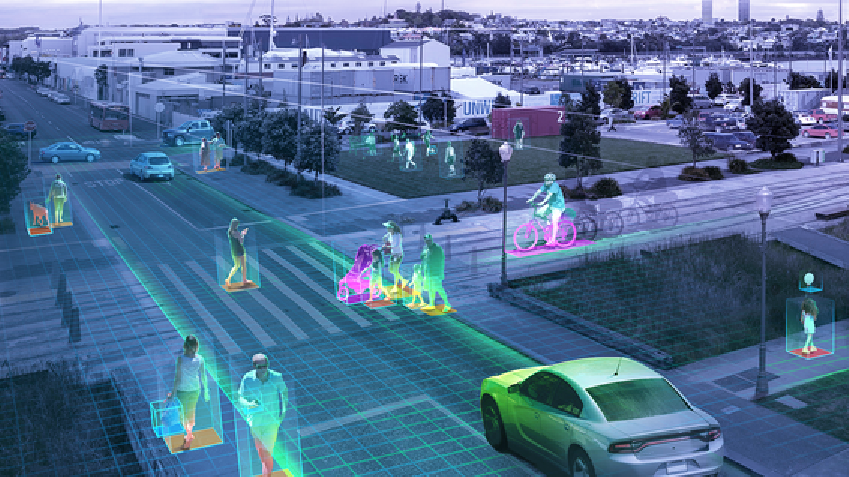
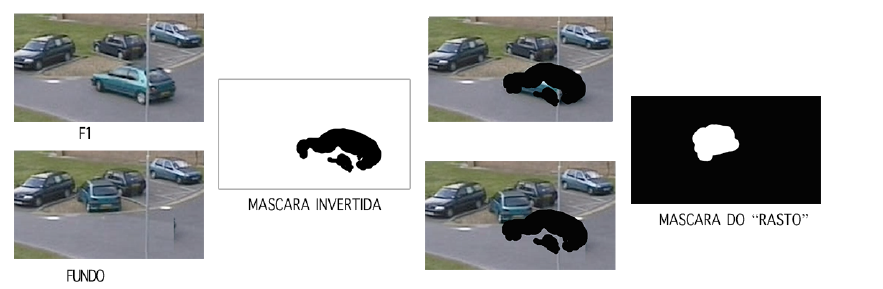

<FolgadoDoesProgramming>
Deteção e classificação de zonas em movimento
O objetivo deste trabalho consiste no desenvolvimento de um algoritmo capaz de detetar e classificar zonas da imagem onde ocorra movimento.
Este algoritmo é para, supostamente, ser integrado num sistema de vigilância e seguir as regiões ativas (regiões em movimento) numa sequência de imagens, conseguindo distinguir se essas regiões ativas são pessoas, carros ou outro.
De maneira resumida o algoritmo deverá funcionar da seguinte maneira, primeiramente analisamos uns valores bases como o LIMIAR e o FUNDO, depois realizamos a aquisição das imagens, nestas iremos tentar localizar as zonas que contêm objetos em movimento, as quais de seguidas são sujeitas a um preprocessamento com o objetivo de melhorar as condições das imagens, de modo a localizar as regiões pertinentes ao contexto deste problema, de seguida extraímos as características destas regiões e classificamo-las. Por fim observamos os resultados do processamento.
A deteção das regiões ativas, ou seja, as regiões que estão em movimento é feita pela subtração destas frames com o fundo dando valores mais altos de diferença nas zonas com regiões novas, por isso a imagem que é usada como fundo é bastante importante, não bastava usar um único frame do vídeo para o tratamento do vídeo completo pois pode haver alterações da luz do sol ou objetos que comecem a fazer parte do novo fundo. Logo é necessária uma atualização constante do fundo.
De modo a reduzir a complexidade computacional deste sistema o processo de atualização dá frame de fundo só é realizado de 5 em 5 frames.
Em relação à extração de características, utilizamos três componentes para classificar as regiões, a primeira é a área para determinar se este é um carro, pessoa ou outro, a segunda é a relação altura e largura da área, e a terceira componente é o histograma, para determinar se é de facto uma região nova, ou apenas uma região antiga que estava desativa mas que voltou a estar ativa(em movimento).
Resultado: